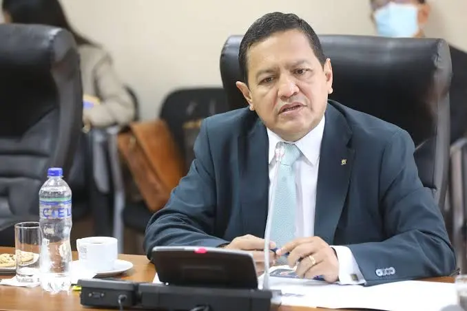
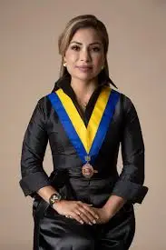
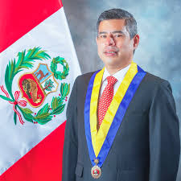
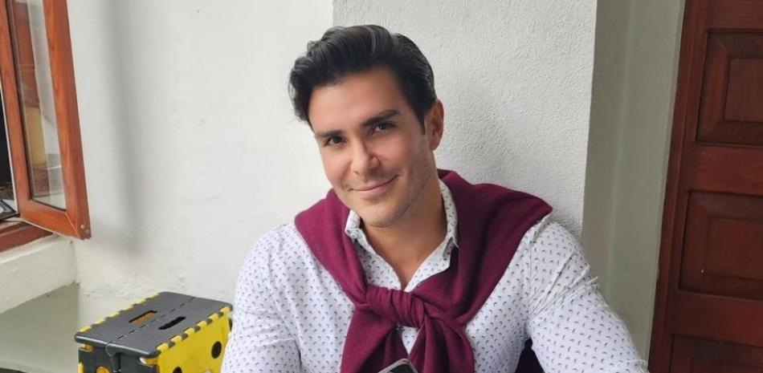
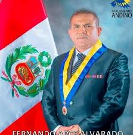
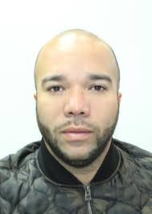
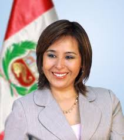
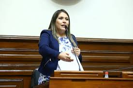
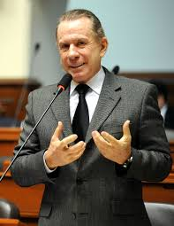

| Nombre | Partido | Foto | Dedicacion |
|---|---|---|---|
| Gustavo Pacheco Villar | Renovación Popular |  |
Relaciones Exteriores y Justicia |
| Leslye Lazo Villón | Acción Popular |  |
Derechos Ambientales y Género |
| Luis Galarreta Velarde | Fuerza Popular |  |
Relaciones Internacionales |
| Juan Carlos Ramírez | Avanza País |  |
Integración Económica Regional |
| Fernando Arce Alvarado | Perú Libre |  |
Educación y Tecnología |
| Vania Cáceres Arones | Somos Perú | Gestión Pública y Ambiente | |
| Renzo Navarro Maurtúa | Fuerza y Libertad |  |
Comercio Exterior Regional |
| Nidia Vílchez Yucra | Partido Aprista |  |
Políticas Sociales Andinas |
| Yeni Vilcatoma de la Cruz | Fuerza Popular |  |
Lucha contra la Corrupción |
| Ricardo Belmont Cassinelli | Progresistas |  |
Soberanía y Comunicaciones |